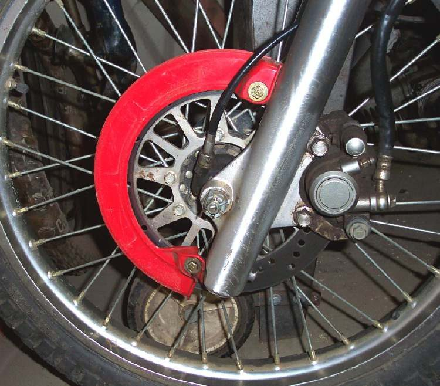

On bikes with a mechanical speedometer, a spinning inner cable runs from a small drive at the front wheel hub to the instrument. A dry cable makes the needle flicker and whine. A broken cable leaves the needle at zero and the odometer stops. Bikes with an electronic speed sensor have no cable: see Speedometer or odometer does not work.
Is it safe to ride?
Yes, with care. You cannot see your speed, and in many places a working speedometer is a legal requirement. Fix it soon.
Quick checks first
- Is there a cable from the front hub to the instrument? (If not, the bike uses a sensor.)
- Is the cable connected at both ends?
- Is the cable pulled tight or kinked when the bars are turned?
- Was the front wheel removed recently?
- The cable drive can sit on the outside of the hub, as on most disc brake bikes, or inside the brake plate, as on many drum hubs. Refit it in the same position, with its ear or tabs engaged, or its housing spins. See Speedometer drive.
Diagnose it step by step
1Is the cable connected firmly at both ends?
- No: reconnect it, engaging the square or slotted drive. Test.
- Yes: go to step 2.
2Disconnect the top end. Lift the front wheel and turn it forward. Does the inner cable tip turn?
- Yes: the cable and hub drive work. A dead needle means an instrument fault: Speedometer or odometer does not work. A flickering needle with a turning cable: go to step 4.
- No: go to step 3.
3Pull the inner cable out from the top. Is it in two pieces?
- Yes: the cable has snapped. Replace the speedometer cable.
- No, whole but not turning: disconnect at the hub and turn the wheel. If the hub drive does not turn, the drive gear or its tangs are broken or not engaged in the hub. Remove the wheel (Remove and refit the front wheel) and check the drive.
4Is the needle flickering or the cable whining? Look at the route: tight bends, kinks, pulled at full lock?
- Yes: reroute or replace the cable. A kink makes the inner bind and snap.
- No: grease the inner cable lightly (not near the top end) and the hub drive (Lubricate control cables). If it still flickers, replace the cable.
5Noise comes from the hub area, not the cable?
- Yes: check the speedo drive and the front wheel bearings (Rumbling or grinding from a wheel).
Causes, most likely first
| Cause | How to confirm | Fix |
|---|---|---|
| Dry cable | Flicker or whine, cable turns | Grease or replace |
| Snapped inner cable | Inner comes out in two pieces | Replace cable |
| Kinked or misrouted cable | Tight bend, worse at full lock | Reroute or replace |
| Hub drive broken or not engaged | Drive does not turn with wheel | Refit or replace drive |
| Instrument fault | Cable turns, needle dead | Speedo dead |